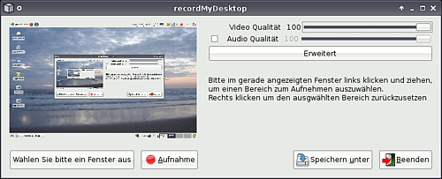
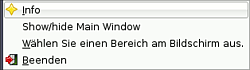
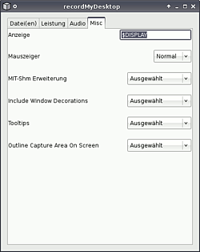

recordMyDesktop
Dieser Artikel wurde für die folgenden Ubuntu-Versionen getestet:
Ubuntu 16.04 Xenial Xerus
Ubuntu 14.04 Trusty Tahr
Zum Verständnis dieses Artikels sind folgende Seiten hilfreich:
recordmydesktop  ist ein Programm, um Abläufe auf dem Bildschirm aufzuzeichnen. Der so produzierte Screencast erlaubt es, visuelle Anleitungen zu erstellen und im Internet zu publizieren. recordMyDesktop benutzt das freie OGG-Format. Bild und Ton können aus einer beliebigen Quelle stammen.
ist ein Programm, um Abläufe auf dem Bildschirm aufzuzeichnen. Der so produzierte Screencast erlaubt es, visuelle Anleitungen zu erstellen und im Internet zu publizieren. recordMyDesktop benutzt das freie OGG-Format. Bild und Ton können aus einer beliebigen Quelle stammen.
Installation¶
Das Programm ist in den offiziellen Paketquellen enthalten. Folgendes Paket muss installiert [1] werden:
recordmydesktop (universe)
 mit apturl
mit apturl
Paketliste zum Kopieren:
sudo apt-get install recordmydesktop
sudo aptitude install recordmydesktop
Zusätzlich wird noch eines der folgenden Pakete benötigt, die eine grafische Benutzeroberfläche (GUI) bereitstellen:
gtk-recordmydesktop (universe)
mit apturl
Paketliste zum Kopieren:
sudo apt-get install gtk-recordmydesktop
sudo aptitude install gtk-recordmydesktop
KDE:
recorditnow (universe)
mit apturl
Paketliste zum Kopieren:
sudo apt-get install recorditnow
sudo aptitude install recorditnow

GUI¶
Nach der Installation kann man RecordMyDesktop bei Ubuntu-Varianten mit einem Anwendnungsmenü über den Eintrag "Anwendungen -> Unterhaltungsmedien -> gtk-recordMyDesktop" starten.
In Xfce ist das Programm unter "Applications -> Multimedia -> RecordMyDesktop" zu finden, bei KDE liegt es unter:
"KMenü -> Multimedia -> RecordItNow"
"KMenü -> Dienstprogramme -> krecordmydesktop"
Benutzung¶
Nach dem ersten Programmaufruf startet das Hauptfenster der Software. Das Fenster unterteilt sich hier in mehrere Abschnitte. Im linken Teil des Programmfensters ist die Vorschau des aktuell sichtbaren Desktops zu erkennen. Im rechten Teil kann man die Qualität der Video- und Aufnahme den individuellen Wünschen entsprechend mit Hilfe eines Schiebereglers anpassen. Außerdem stehen dem Benutzer einige Schaltflächen zur Verfügung:

| Hauptfenster | |
| Schaltfläche | Bedeutung |
| "Erweitert" | Hinter dieser Schaltfläche sind weitere Einstellungsoptionen zu finden |
| "Wählen Sie bitte ein Fenster aus" | Hier werden nur die Aktivitäten innerhalb eines Fensters berücksichtigt |
| "Aufnahme" | Startet die Aufnahme des gesamten Desktops |
| "Speichern unter" | Festlegen des Dateinamens |
| "Beenden" | Programmm beenden |
In der Systemleiste befindet sich außerdem eine weitere Schaltfläche. Ein Rechtsklick auf das Icon öffnet ein zusätzliches Menü mit weiteren Optionen.

Hinweis:
Das Festlegen des Speicherorts vor der Aufnahme ist empfehlenswert, da das Video gleich nach Beenden der Aufnahme erstellt wird und man den Speicherort zu diesem Zeitpunkt nicht mehr ändern kann.
Einstellungen¶
Unter "Erweitert" sind weitere Einstellungsmöglichkeiten vorzunehmen:
| Hauptfenster | |
| Reiter | Einstellungsmöglichkeiten |
| "Datei(en)" | Überschreiben von vorhandenen Dateien (de)aktivieren / Arbeitsverzeichnis |
| "Leistung" | Bildwiederholrate, Kodierung, Kompression ... |
| "Audio" | Anzahl der Kanäle / Frequenz / verwendetes Gerät ... |
| "Misc" | Einstellungen zum Mauszeiger, zur Fensterdekoration ... |
Sofern man mit dem Mauszeiger auf einem Punkt verharrt, erscheint eine Meldung, die den jeweiligen Punkt und dessen Funktion erläutert.
Tipps¶
Aufnahme¶
Ein Rechtsklick auf das Icon öffnet ein Menü mit weiteren Optionen. Der Punkt "Wählen Sie einen Bereich am Bildschirm aus" gestattet es, nur einen bestimmten Bereich des Bildschirms aufzuzeichnen. Dies erlaubt es auch Nutzern von älteren Rechnern, Aufnahmen zu machen, ohne den PC in die Knie zu zwingen.
Probleme mit USB-Headsets¶
Falls kein Ton mit der Aufnahme von USB-Headsets aufgenommen wird, liegt es häufig daran, dass USB-Headsets eigene Soundkarten eingebaut haben. Somit findet der Computer mehrere Audio-Geräte im System. Abhilfe schafft hier die genaue Deklaration des aufzunehmenden Gerätes in den Einstellungen von gtk-record-MyDesktop unter Audio. Das USB-Headset, von dem man aufnehmen möchte, findet man einfach mit folgender Methode heraus:
ls /proc/asound
Bei der Auflistung im Terminal sollte ein Augenmerk auf die türkis dargestellten Verzeichnisse geworfen werden. Dies sind die Namen der Geräte, die im Computer verbaut bzw. angeschlossen sind.
Beispiel: Intel und Audio (angenommen, Intel ist die Standard-Audio-Karte). Weitere Informationen über die Soundkarte im USB-Headset liefert der Befehl:
ls /proc/asound/Audio
Nun gibt es in der Regel 2 hellblaue Verzeichnisse. Als Beispiel seien pcm0c und pcm0p genannt. Das C steht für Capture (= Aufnahme) und das P für Playback (=Wiedergabe). Ergänzt man nun den obigen Befehl um das Capture-Verzeichnis:
ls /proc/asound/Audio/pcm0c
sollte man eine Datei namens info vorfinden. Diese Datei kann man sich mittels cat ausgeben lassen:
cat /proc/asound/Audio/pcm0c/info
Wichtig bei der Ausgabe sind die Zeilen card und device. Die Zahlen dahinter schreibt man in die Audio-Einstellungen von recordMyDesktop nach folgendem Muster: hw:card,device (Beispiel: hw:1,0)
PulseAudio verwenden¶
Statt einen direkten Zugriff auf die Karte mittels hw:card,device zu realisieren, kann man die Aufnahme auch über den PulseAudio Server umlegen. Hierzu wird recordmydesktop mit dem Parameter --device pulse gestartet:
recordmydesktop --device pulse
Verwendet man die grafische Oberfläche so muss der Wert unter Erweitert->Audio->Gerät (nach der Installation default) durch pulse ersetzt werden.
Internes Audiosignal mit PulseAudio verwenden¶
Die einfachste Möglichkeit, das interne Audiosignal aufzunehmen besteht darin, wie oben beschrieben PulseAudio einzurichten und die PulseAudio-Lautstärkeregelung zu installieren.
sudo apt-get install pavucontrol
Zum konfigurieren muss nun eine Aufnahme gestartet werden und in der PulseAudio-Lautstärkeregelung unter dem Reiter Aufnahme bei dem Dropdownmenü der aktiven Spur Monitor of Internes Audio gewählt werden. Dieser Wert bleibt dann auch bei einem erneuten Start des Programms gesetzt.
OGG-Videos konvertieren¶
Wer die mit gtk-recordmydesktop aufgenommenen Videos z.B. bei Youtube hochladen will, oder unter Windows anschauen möchte, kann sie mit dem MEncoder kompatibel machen [4].
Videowiedergabe¶
Es kann vorkommen, dass die Wiedergabe des Videos nicht funktioniert. Grund hierfür ist ein falsch konfigurierter Videoplayer. Hier das Video mit einem anderen Videotreiber abspielen, z.B. beim MPlayer einmal gl oder gl2 verwenden. Alternativ den Aufnahmebereich einschränken (weitere Informationen ).
Terminal¶
Das Programm wird über das Terminal [3] mit folgendem Befehl gestartet, wobei ohne weitere Parameter der ganze Bildschirm aufgenommen und als out.ogv gespeichert wird.
recordmydesktop
Weitere Befehle:
recordmydesktop ~/foo.ogv #speichert im Homeverzeichnis unter dem Namen foo.ogv ab recordmydesktop -x X_pos -y Y_pos --width BREITE --height HÖHE -o foo.ogv #ein bestimmter Bereich wird aufgenommen
Weitere Startoptionen sind in der Manpage zu finden. Eine Aufnahme wird durch die Tastenkombination Strg + C beendet.
Links¶
Mit recordMyDesktop erstellte Screencasts auf YouTube
 - Fehlerbehebung "grüne Vorschaubilder", Blogbeitrag 06/2011
- Fehlerbehebung "grüne Vorschaubilder", Blogbeitrag 06/2011Screencasts
 Übersichtsartikel
Übersichtsartikel
- Erstellt mit Inyoka
-
 2004 – 2017 ubuntuusers.de • Einige Rechte vorbehalten
2004 – 2017 ubuntuusers.de • Einige Rechte vorbehalten
Lizenz • Kontakt • Datenschutz • Impressum • Serverstatus -
Serverhousing gespendet von